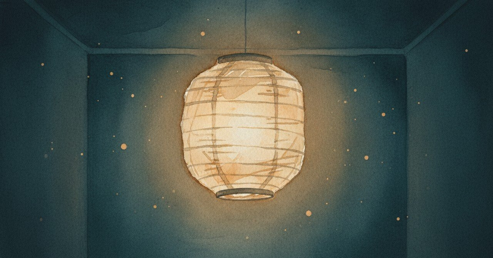

バリューランタンを描いた夜、中心に子どもがいた

2026-04-26、自分の中心にあるものを、確かめ直していた。描き直したわけではなく、灯り具合を見ている感覚だった。
今日の現場
最近、意思決定が散らかる
やりたいことが多すぎる
でも「何のためか」が霞む瞬間がある
中心が見えていないわけではない
ただ、見失いそうになる夜もある
あの頃と今
2024年11月9日、バリューランタンをようやく作ることができた、と当時の日記に書いていた。タイトルは「未来への目標期待を書く」とあった。「自分にとって家族という存在の大きさを痛感したが、これからどう作っていくべきか…」と書きかけて、一度言葉が止まっていた。
続きはこう書かれていた。「ランタンのハンドル離さないようにしないと。後回し、非難、などで起きるから気をつけよう」と。その日記は、短かった。いつもの日記と違って、食べたものも、仕事の細かい反省も書かれていない。バリューランタンのことと、ハンドルを離さない、の2点だけで終わっていた。
短い日記が、一番重い日のサインだった、と今ならわかる。書ききれないことが多すぎる夜は、文字数が逆に減る。
あれから1年半、中心はぶれていない。ただ、ハンドルを持ち続ける力は、常に試されている。後回しと非難は、今も同じ場所から滑り込んでくる。
頭の中
価値観は見つけるものではなく、確かめ直すものだと思う。一度描いたランタンが、日々の意思決定で点灯し続けているかは、別の問題。描いた夜がゴールではなく、スタートに近い。
ただ、「中心に子ども」と描いた自分を、当時の自分は信じ切れていなかった気もする。言葉にした瞬間、それが本当かどうか自分に問い直す時期がしばらく続いた。疑いながら灯していた時期が、たぶん一番真剣だった。
まだ途中のこと
ハンドルを離しかけた瞬間は、過去1年半で何度もあった。次に離しかけたとき、自分で気づけるようにしたい。気づくための仕組みを、少しずつ育てている最中だ。
続きは次の夜に書きます。
#創作大賞2026 #日記 #価値観 #家族 #ジャーナリング